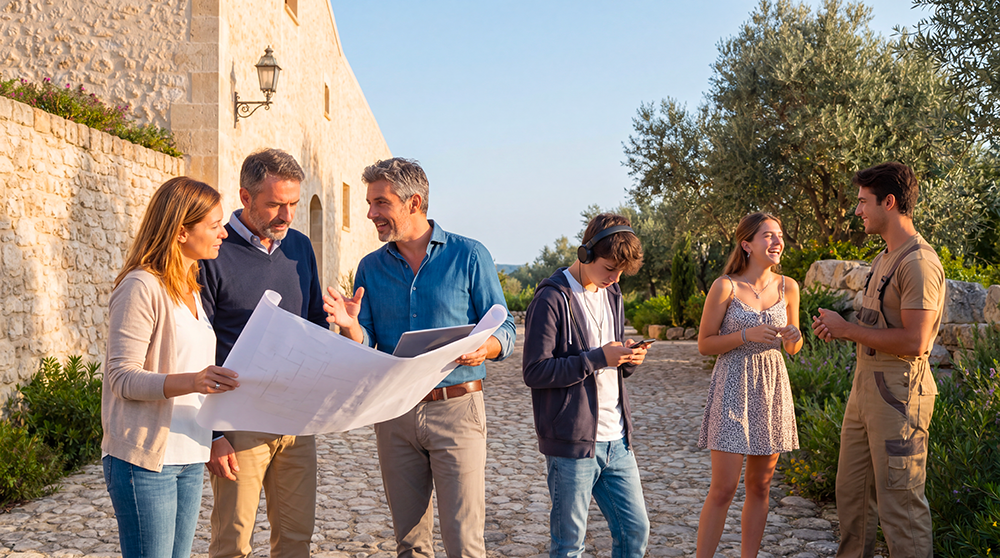

Pietro Laureano · Consulente UNESCO
«Ogni giorno la morte di un vecchio, l’abbandono di un villaggio da parte di un contadino, determina la scomparsa di una biblioteca di conoscenze locali indispensabili a fronteggiare le nuove sfide.»
Africa Forum, Roma 2008
C’è una domanda che vale la pena porsi prima di parlare di restauro, di fondi, di unità abitative o di governance: perché un baglio? Non come scelta estetica. Come risposta a cosa?
La risposta è scritta nel tempo lungo — nei millenni in cui l’uomo mediterraneo ha imparato, sbagliando e correggendo, a costruire uno spazio in cui si vive bene con il caldo, con la siccità, con la scarsità e, soprattutto, con gli altri. Il baglio siciliano non è un’invenzione. È l’ultimo anello di una catena lunghissima.
La genealogia del baglio

واحة
Wāḥa
L’oasi non nasce dalla natura. Nasce dalla decisione di un gruppo umano di restare — e di lavorare insieme per strappare fertilità alla sabbia. Raccolta dell’acqua piovana, canali sotterranei, alberi piantati in sequenza per creare microclimi: ogni oasi è un progetto collettivo di sopravvivenza. La ricerca accademica sull’architettura mediterranea lo dice con chiarezza: «Non si tratta di insediamenti sorti spontaneamente, ma artificialmente creati dalla forza e dalla coesione del gruppo umano». L’oasi insegna che un luogo non esiste senza la comunità che lo vuole.

Αὐλή
Grecia classica · V–IV secolo a.C.Nell’antica Olinto, le case si aprivano verso l’interno, non verso la strada. Il cortile centrale — la aulé — orientato a mezzogiorno riceveva il sole basso d’inverno e veniva ombreggiato d’estate dall’aggetto del tetto. Socrate lo spiegava ai suoi discepoli come principio elementare di buona vita: una casa rivolta a sud, con stanze alte a nord, è fresca in estate e calda in inverno senza bisogno di nient’altro che la geometria. Non era architettura da ricchi. Era intelligenza applicata al clima, alla portata di tutti.

Atrium
Roma · II secolo a.C. – V secolo d.C.La domus romana aggiunge due elementi al principio greco: l’atrio, che raccoglie l’acqua piovana in una vasca centrale — l’impluvium — e il peristilio, un giardino interno porticato in cui la famiglia mangiava d’estate e si riparava d’inverno. L’acqua raccolta dall’atrio scorreva in cisterne sotto il pavimento e veniva usata per irrigare l’orto. Nessuno spreco, nessun sistema esterno: l’edificio era autonomo perché era stato pensato per esserlo. Vitruvio ne descrive le regole nel dettaglio, come se fossero evidenti: orientamento, spessore dei muri, posizione delle aperture. Una scienza, non un gusto.

حوش
Ḥawsh
Gli Arabi portano in Sicilia la versione desertica dello stesso principio: la casa si chiude verso l’esterno come un blocco compatto, mura spesse che isolano dal caldo, e si apre verso il cielo attraverso una corte interna — il ḥawsh — dove l’acqua di una fontana raffredda l’aria per evaporazione e la vegetazione filtra la luce. I vicoli stretti delle città islamiche siciliane — Mazara, Marsala, Palermo — seguono lo stesso principio: l’ombra reciproca degli edifici crea frescura senza aria condizionata. L’Emirato di Sicilia non ha lasciato molti edifici. Ha lasciato un modo di costruire che la pietra locale ha assorbito e trasmesso.

Baglio
Sicilia occidentale · XV–XVIII secoloIl baglio è la sintesi finale. Mura di pietra calcarea locale alte e spesse, che d’estate tengono il fresco e d’inverno irradiano il calore accumulato. Un portale unico — difensivo verso l’esterno, accogliente verso l’interno. Una corte chiusa che è insieme spazio di lavoro, di incontro, di sosta. Cisterne sotterranee che raccolgono ogni goccia di pioggia. Logge e porticati che creano ombra nelle ore calde. E, sempre, uno spazio per il sacro: la cappella, al centro o nell’angolo, come nei borghi monastici che l’avevano ispirato. Il baglio non era un palazzo. Era un sistema: autosufficiente, comunitario, pensato per durare generazioni senza bisogno di risorse che non fossero già lì, nel territorio.
Il Baglio San Michele
Il Baglio San Michele è uno di questi luoghi. Costruito nel XVI secolo nel territorio ragusano, porta nella pietra la memoria di tutto questo.
Le sue mura di calcarenite locale hanno uno spessore medio di ottanta centimetri: non per ostentazione, ma perché quella massa termica mantiene la temperatura interna relativamente costante tutto l’anno, senza impianti. La corte centrale era il cuore della vita comune — lavoro, pasti, feste, assemblee. La cisterna sotterranea raccoglieva l’acqua delle piogge invernali e la restituiva nei mesi secchi. La cappella segnava il ritmo del tempo.
Non si trattava di nostalgia. Si trattava di competenza: la conoscenza accumulata da cinquemila anni di esperienza mediterranea su come costruire uno spazio in cui si vive bene con poco, dove le relazioni tra le persone e la relazione con la terra non sono valori aggiunti ma condizioni strutturali del funzionamento.
Il progetto Borgo Ideale non sta restaurando un monumento. Sta riattivando un sistema.
La tesi del progetto
Il Baglio San Michele non è un edificio storico da conservare.
È una tecnologia millenaria da rimettere in funzione.
I riferimenti storici e architettonici contenuti in questa pagina sono documentati, tra le altre fonti, nella ricerca accademica di Lorena Musotto, «Insediamenti sostenibili della tradizione mediterranea», Dottorato di ricerca, Università degli Studi di Napoli Federico II, XXIII ciclo. La citazione di Pietro Laureano è tratta dall’intervento all’Africa Forum, Roma, 4 giugno 2008.